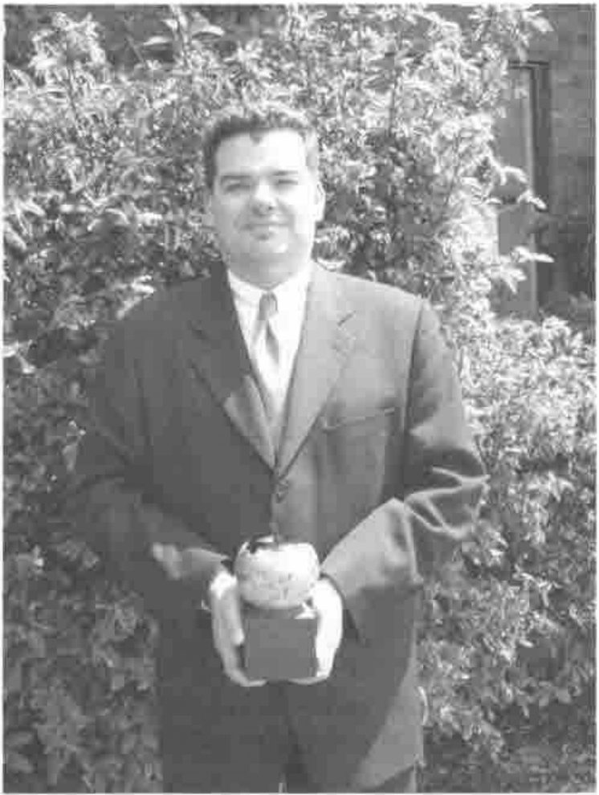

Minutes of the AGM of the British APL Association held on 18 May 2001
Vector 18:1, page 9
Transcribed from the printed issue; not yet reviewed. Read it in the PDF of the issue, page 9
Minutes of the AGM of the British APL Association held at the Royal Statistical Society from 2pm to 2.15 pm on 18 May 2001¶
Apologies were received from Ian Clark and Stefano Lanzavecchia.
The minutes of the last AGM as printed in Vector Vol 17 No 1 were approved.
The Chairman reported as follows:
British APL Association Chairman’s report on the year 2000-2001¶
The committee for next year is:
| Chairman | Adrian Smith |
| Secretary | Anthony Camacho |
| Treasurer | Nicholas Small |
| Editor | Stefano Lanzavecchia |
| Webmaster | Ray Cannon |
| Activities | Jon Sandles |
| Education Officer | Vacant – to be co-opted |
| Projects & Publicity | Alan Mayer |
The subscriptions for next year are to be increased to £20 for an individual, £100 (with entitlement to 5 copies of Vector) for a corporate and to £500 for a sustaining member.
Vector is thriving; it even has more material available than usual. The working group continues to be a friendly and effective way to drum up articles and it is noticeable that the material we print does not even largely come from the committee and the working group.
The project to port A+ is progressing (but we haven’t had a completely successful compilation yet) and we hope that we will have an APL-like powerful desk calculator that we can give away to schools and anyone interested before too long.
We gave welcome help to APL Berlin 2000 and as a by-product produced the CD of the working papers and the archive of those Vectors we have in electronic form. This is very useful as an aid to promote membership, particularly in the USA. We are committed to help to at least the same extent at Madrid.
Accounts¶
The Treasurer, Nicholas Small, presented the accounts (as below). There were no questions.
Outstanding Achievement Award¶

Adrian Smith presented the BAA award for outstanding achievement to John Daintree in recognition of his work in setting up Dyalog as part of Microsoft’s .NET project.
The award recognises that this work has not been at all easy, and has required considerable persistence and patience in interpreting the patchy and ever-changing documentation that goes with any beta software.
John has been able to work with a succession of .NET beta programmes from Microsoft and has been able to integrate the Dyalog APL interpreter into these environments with ever-increasing confidence and reliability.
The award also recognises that this is a major opportunity for the APL world to get back into mainstream development, and that Dyadic Systems as a whole should be thanked for their considerable investment in time and manpower in responding to Microsoft’s invitation to participate in the .NET programme.
No member wished to ask a question or to raise any other business. The Chairman declared the AGM over and the meeting continued with the presentations, no doubt reported elsewhere.
Anthony Camacho 22 May 2001
Treasurer’s report¶
Nicholas Small reported: he circulated a short set of accounts:
British APL Association – Summary of Annual Accounts 2000/2001¶
Summary of income and expenditure/receipts and payments:
2000/01 2000/01 1999/2000 1998/99 1997/98
(R&P) (I&E) (I&E) (I&E) (I&E)
£ £ £ £ £
Income/Receipts
Subscriptions 9513 9736 9152 10368 11021
BCS services 183 183 278 167 0
Bank interest 2251 2251 1882 2943 3322
Vector advertising (incl. VAT) 2342 2967 3047 2463 3471
Other 394 394 366 264 108
----- ----- ----- ----- -----
Total receipts 14682 15530 14725 16206 17922
----- ----- ----- ----- -----
Expenditure/Payments
Meetings 265 265 259 704 0
Administration 1316 1347 1344 1423 1152
BCS services 183 183 278 167 0
Vector production and despatch 16223 16344 15802 17086 14584
Education Vector Supplement - - - - 108
Projects 1721 1721 470 328 501
Other 307 355 501 426 308
----- ----- ----- ----- -----
Total payments 20014 20215 18653 19954 16653
----- ----- ----- ----- -----
Assets summary:
Bank and other balances 39652 44984 49055 52525
Debtors 1912 858 733 2071
Creditors (5265) (4858) (4766) (5270)
----- ----- ----- -----
Net assets 36299 40983 45012 49327
----- ----- ----- -----
Written off (100) (568)
Notes to the Accounts¶
Pence figures have been omitted, so columns may not add exactly.
The value of stocks of Vector have not been assessed, nor has the value of the Association’s computing hardware and software.
For 2000/2001, figures are shown both as income and expenditure, i.e. revenues strictly relating to the activities of that year, and as receipts and payments, i.e. what goes in and out of our bank account. The comparative figures for earlier years relate to income and expenditure.
Membership report¶
Nicholas reported on behalf of Rowena:
1. Membership at 30.4.01 (previous year’s figures in parentheses)¶
UK FOREIGN TOTAL
Number Vectors Number Vectors Number Vectors
Sustaining 5 (4) 25 (15) 3 (4) 66 (76) 8 (8) 81 (88)
Corporate* 7 (6) 50 (37) 1 (1) 10 (30) 7 (11) 47 (87)
Corp. Ind* 19 (20) 19 (24) 2 (2) 2 (1) 22 (23) 26 (27)
Individual 122 (130) 122 (128) 237 (218) 235 (218) 359 (348) 357 (346)
Non-voting 16 (15) 16 (15) 0 (0) 0 (0) 16 (15) 16 (15)
Life 1 (1) 1 (1) 1 (1) 1 (1) 2 (2) 2 (2)
Library 0 (1) 0 (1) 5 (6) 5 (6) 5 (7) 5 (7)
Russians 10 (10) 10 (10) 10 (10) 10 (10)
APL Groups 13 (14) 39 (42) 13 (14) 39 (42)
586 (573))
*Add the Vector numbers in these rows to get the total subscribed for by corporate members.
2. New members, May 2000-April 2001¶
Individual UK: 5 Europe: 9 USA/Canada:19*
*including 13 taking advantage of the special $50 for two years offer.
Library:VUBA Printmedia, Germany
Corporate: Adaytum
3. Non-renewers, May 2000-April 2001¶
Library: SWETS (Abingdon) and Tieto-Tietopalvelut OY (Finland)
Individual: 29, of which
3 gone away
8 explicit resignations (usually not using APL)
18 no contact, just failed to renew
Further business¶
There were no questions to Officers nor any other business so the Chairman closed the meeting at approximately 2.15 pm and handed over the meeting to Jon Sandles.
Anthony Camacho 22nd May 2001